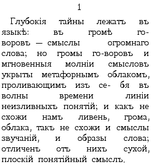
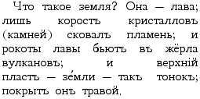
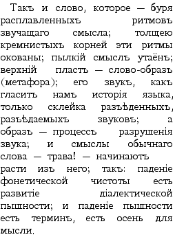
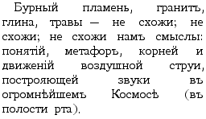

Glossolalia (Section 1)
GLOSSOLALIA

Profound mysteries reside in language: in the thunder of the sounds of speech there are -- meanings of an enormous word; but the thunders of sounds and the instantaneous lightning bolts of meanings are concealed by a metaphorical cloud, which pours out from itself into the waves of time lines of unpoured concepts; and just as downpours, thunder and lighting are not related for us, so too are the meanings of the sounds and the images of the word unrelated: the barren, flat conceptual meaning is distinct from them.

What is the earth? It is -- lava; a flame forged just a crust of crystals (of rocks); and rumblings of lava beat against the craters of volcanoes; and the upper layer -- of the earth -- is very thin; it is covered by grass.

So too is the word, which is -- a storm of molten rhythms of a sound meaning; these rhythms are bound by a thicket of siliceous roots; their ardent meaning is kept a mystery; the upper layer is -- the word-image (metaphor); its sound, as the history of language tells us, is merely a combination of disparate regurgitated sounds; but the image is -- a process of the destruction of sound; and the meanings of an ordinary word are -- the grass! -- they begin to grow out of it; so that: the fall of phonetic purity is a development of dialectical splendor; and the fall of this splendor is a technical term, it is the autumn for thought.

The stormy flame, the granite, the clay, the grasses are -- not related, not related; their meanings are unrelated for us: of the concepts, of the metaphors, of the roots, and of the movements of the air stream which constructs sounds in the enormous Cosmos (in the cavity of the mouth).